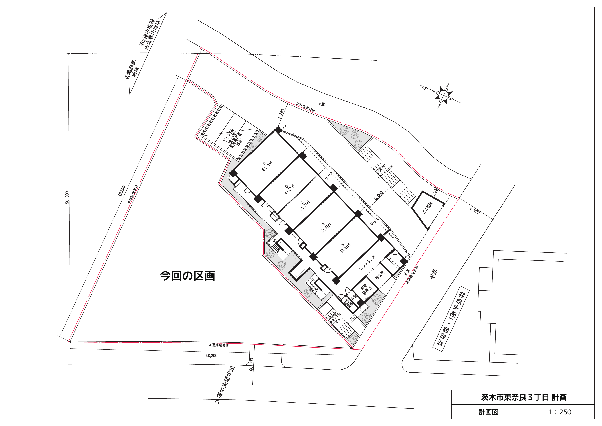

南茨木駅へ阪急3分・モノレール5分
阪急京都線と大阪モノレールの結節点に近く、大阪・京都・北摂へ動きやすい。単一大学の門前ではなく、複数方面への移動を前提にできる立地である。
根拠：同一地番にある現行物件の募集情報。配布資料の一括表記「徒歩3分」より、路線別の現行公開値を優先。Group review · updated 2026.09.03
留学生と国内学生が対等な居住者として暮らし、料理、食事、学習、家事という毎日から互いの文化を学ぶ。大学を越えた「国内留学型の生活基盤」をつくる。
企画の出発点を、配布資料・図面・公開情報で確認できる事実に限定する。将来予測や企画側の評価は、ここでは混ぜない。
阪急京都線と大阪モノレールの結節点に近く、大阪・京都・北摂へ動きやすい。単一大学の門前ではなく、複数方面への移動を前提にできる立地である。
根拠：同一地番にある現行物件の募集情報。配布資料の一括表記「徒歩3分」より、路線別の現行公開値を優先。建蔽率80%、容積率300%。南・東側に道路、北側に水路がある不整形な区画で、隣接マンションや周辺住環境への配慮が必要になる。延床3,600㎡は単純計算で360%となる。
根拠：配布資料「敷地図 A3 1:200」「用地詳細 A3 1:250」。上限値と実際に収まる建築面積は別途検証。課題資料と同じ「東奈良三丁目328番1」の地番表記を持つコスモグラシア南茨木が、139室・2026年1月完成として現行募集されている。表面家賃5.75万〜6.9万円に加え、食費2.97万円、管理費月1.9万円などがかかる。
根拠：UniLife「コスモグラシア南茨木」募集情報。分筆後の登記上の同一性は未確認。立命館大学は2024年4月の学部・研究科移転後、大阪いばらきキャンパスを6学部・7研究科の体制と説明し、大学発行媒体では約1万人超としている。大きな需要母体候補だが、2026年度の厳密な在籍者数ではない。
根拠：立命館大学の6学部・7研究科発表、大学発行「りつめい」。茨木市は、大学・学生を地域の共創主体として位置づけている。2026年度実施計画には、他大学の学生同士のつながりをつくる取組が示されている。
根拠：茨木市「第6次総合計画 第2期実施計画」。寮需要そのものを保証する資料ではない。2023年の茨木市調査では、回答者59人のうち活動後の主な滞在地は市内37.3%、市外62.7%。交通利便性への言及も多かった。
根拠：茨木市「大学生の活動実態等に関する調査」。人数・性別・大学構成に偏りがあり、学生全体へ一般化しない。「留学生向けの部屋が足りない」だけでは、新しい寮を建てる根拠にならない。既存寮が担っている役割と限界を分け、CROSS BASEでなければ埋めにくい空白を特定する。
留学生の70.1%は民間アパート等に住み、48.7%は住居契約で保証人を求められた。住居選びでは家賃・初期費用が77.7%、通学時間・距離が66.9%を占める。一方、授業外で日本人と交流しない留学生は29.4%だった。
根拠：JASSO「令和5年度 私費外国人留学生生活実態調査」（回答7,867人）。全国値であり、南茨木の需要量を直接示すものではない。住宅契約上の代表的な課題は国土交通省の外国人入居円滑化資料も参照。I-Houseは6人単位の生活とレジデント・メンターを組み合わせ、月額64,200円、原則1年間。G-Houseは月額74,200円、立命館大学の学生を対象とし、GLA以外は原則1年間である。
根拠：OIC I-House公式案内、OIC Global House入寮案内。現在の入居率、落選者数、待機者数は未確認。国内学生との混住、共有キッチン、生活ルール、活動を備えた寮では、日本人との人間関係と日本語学習が広がった事例がある。一方、交流は空間の階層、小さな生活単位、公式・非公式の活動、RA等の支援を組み合わせて初めて持続する。
根拠：JASSO掲載の国際寮比較事例、国際学生寮の建築・運営に関する多事例研究。小規模な事例研究を因果関係や全寮共通の結論として一般化しない。2024年度に大学等が把握した日本人学生の海外留学は91,054人で、そのうち1か月未満が60,301人だった。混住生活は海外留学の代替ではないが、語学や異文化環境へ日常的に踏み出す入口になりうる。
根拠：文部科学省「外国人留学生在籍状況調査及び日本人の海外留学者数等について」。ここでいう人数は大学等が把握した留学で、寮への入居意向を示す調査ではない。既存寮と役割を重ねず、未充足の条件に絞る。
特定大学だけに閉じず、複数大学の留学生と国内学生を受け入れる。来日直後の支援だけでなく、2年目以降も続く生活圏と人間関係をつくる。
留学生と国内学生を対等な居住者とし、料理、食事、学習、家事を共にする。個室と静かな時間を守りながら、参加を強制しない接点を日常動線に組み込む。
少人数ユニット、共有キッチン、RAの配置と研修、生活ルール、紛争対応、二言語案内、宗教・食・静穏への配慮までを一つの居住サービスとして設計する。
この案の核は「留学生と国内学生が同じ建物に住むこと」だけではない。互いの異なる生活知識と留学目的を、日常の相互学習へ変えるという仮説である。
留学生には日本での住居・契約・生活支援、国内学生には語学や留学準備の機会が必要になる。
OICの既存寮にも国内学生と留学生の混住がある。食事・家具・防犯等の設備も既存住宅で提供される。
日本語・日本文化・生活知識と、外国語・異文化理解を交換できれば、日常生活そのものが国際教育になる。
共有リビングと外部利用ゾーンを分け、食・文化祭型の活動を地域・行政との関係へつなぐ。
SWOTは、内部の強み・弱みと外部の機会・脅威を並べる分析。ここでは結論を正当化せず、現状案を次に進める条件と、止める条件を見える形にする。
組み合わせごとに、次の一手を一つの方向へ絞る。
交流そのものを目的にせず、それぞれが抱える現実的な不安や不足へ応答する。価値が両立しない場合は、まず居住者の安全と生活を優先する。
ピンクを外部利用、グリーンを居住者専用として色分けし、交流の入口、公開範囲、時間、管理責任を空間と一緒に決める。
下図は対象地を読み取るための「用地詳細」であり、描かれている共同住宅の平面を今回の学生寮案として採用したものではない。

正確な配置検討は1:200敷地図の分筆境界を基準にする。建蔽率80%は上限であり、800㎡が自動的に建つという意味ではない。
最新シートは6階建て・112室・目的共用部810㎡の数値案。一方、設計方針は6階未満の低層化を求めている。延床3,600㎡は敷地1,000㎡に対して単純計算で360%となり、指定容積率300%を超えるため、延床・戸数・階数を一体で見直す必要がある。
道路側へ外部利用ゾーンを開き、居住者専用部と入口・時間・動線を分ける。水路・住宅側は静穏とプライバシーを優先する。騒音解析や近隣協議前の方向性である。
配布説明資料は、土地と建物を合計した投資総額で回収年数と利回りを評価すると明記している。現状の数値案は15年・7%の両方を満たしていない。
| 評価ケース | 投資額 | 年間利益 | 回収 | 利回り | 15年 / 7% |
|---|---|---|---|---|---|
| 正式要件 建設費＋土地取得費7億円 | 18億5,410万円 | 7,341.9万円 | 約25.3年 | 約3.96% | 条件外 |
| シート表示 建設費のみ・正式判定には使わない | 11億5,410万円 | 7,341.9万円 | 15.7年 | 6.36% | 条件外 |
公開情報は2026年9月3日時点の確認。リンクは事実の出典であり、企画の成功や需要を保証するものではない。
コンセプト策定ワークシートの仮コンセプト、ゾーニング、9/3フィードバックと、収益シートの6階・112室案を反映。土地代を除く数式は正式要件と不一致。
共創のまちづくり、公共交通と連動した拠点形成の方向を確認。学生寮の需要や収益は扱わない。
大学・学生との共創や、大学横断のつながりをつくる取組を確認。居住意向とは別に検証が必要。
2024年4月の移転後、6学部・7研究科体制になったことを確認。2026年度の厳密な在籍者数は別途確認する。
2024年度契約物件のOIC平均は家賃・共益費合計66,976円。今回の家賃設定への支払意思を直接証明するものではない。
139室、2026年1月完成、設備、食事、管理、募集条件を確認。募集情報は更新されるため最終提案前に再確認する。
分譲棟と学生マンションの一体開発、阪急3分・モノレール5分、両棟の関係を確認。仮想再提案として扱う根拠。
回答者59人の活動後滞在地と自由記述を確認。標本の偏りがあるため、市内大学生全体へ一般化しない。
近隣に既存の地域活動拠点があることを確認。食・文化イベントの開放ゾーンは、既存施設との役割分担を検討する。
いま必要なのはコピーの磨き込みより、成立条件の確認。上から順に合意すると、平面と収益を無駄なく往復できる。
国際交流を掲げるだけでなく、調査から建物で起こる活動まで一続きで説明する。
現状の内向きな形状では、地域・国際交流への開放が建築として伝わらない。
現状は約25.3年・3.96%で、正式要件の15年以内・7%以上を満たさない。